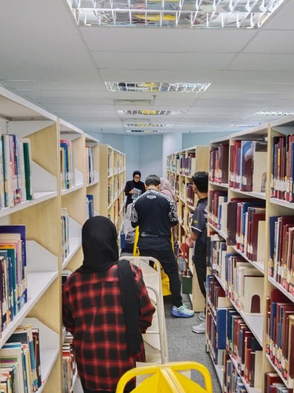
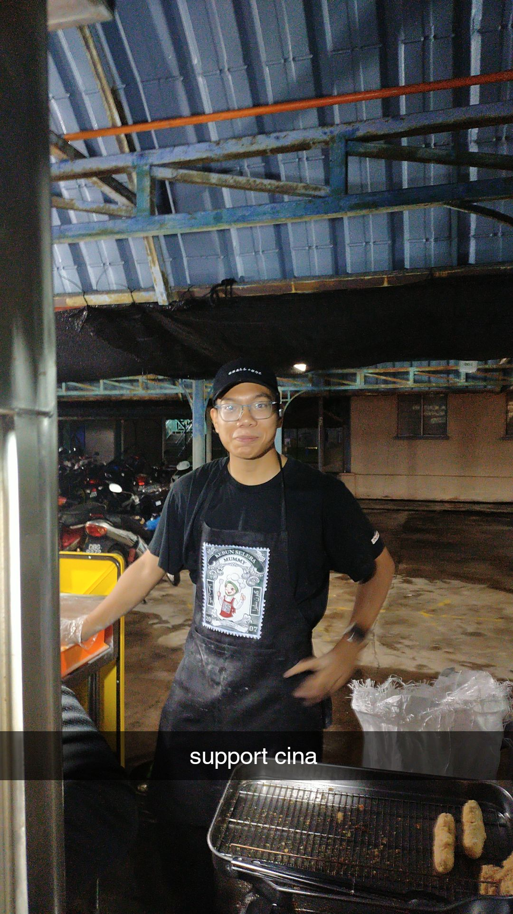
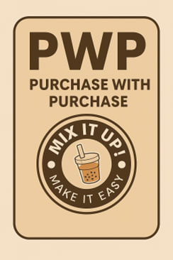
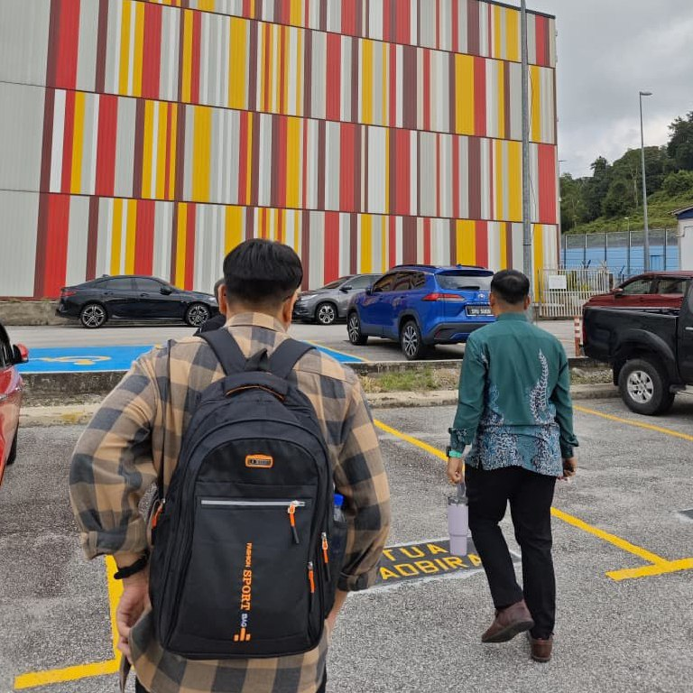
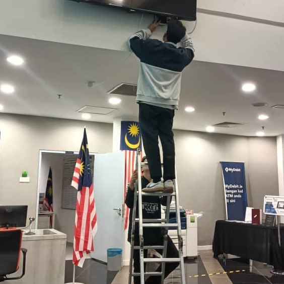
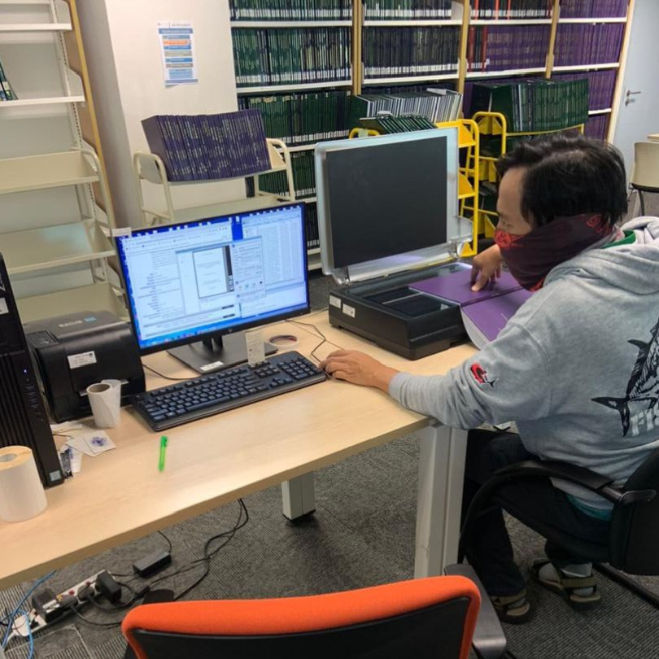
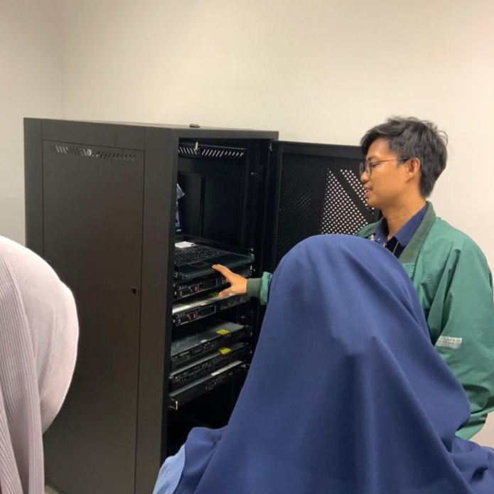
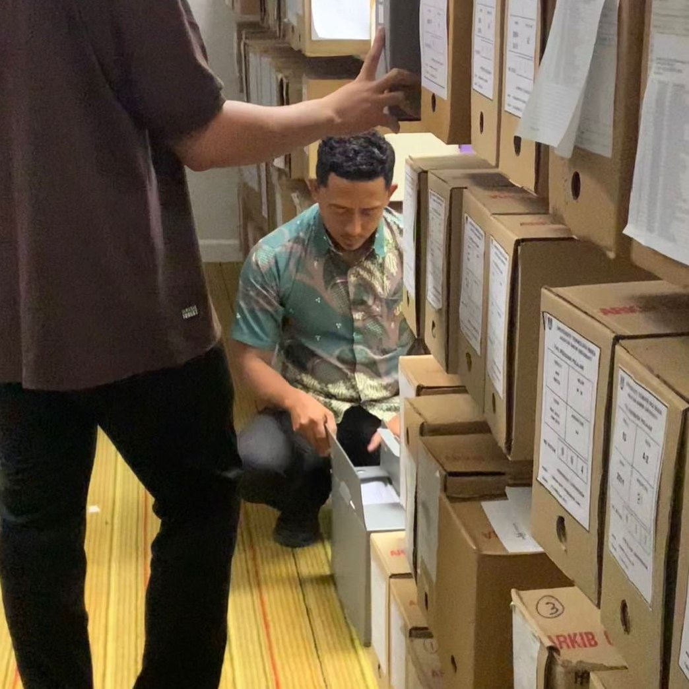
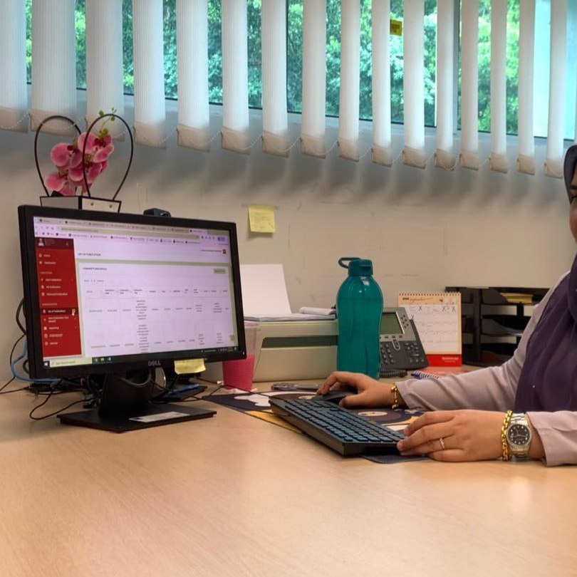

My Experience
Throughout my journey, I’ve gained valuable experiences that have shaped who I am today. From school projects and teamwork activities to personal growth and new challenges. Each step has taught me something important about perseverance, creativity and learning from mistakes.
Internship / Industrial Training Experience

- Library Management Unit
- Carry out inventory checks on every floor and area involved such as the Maker Lab, Study Area and officers’ rooms
- Update inventory data in Microsoft Excel based on the inspection results
- Manage official documents, filing systems and administrative records
- Archive Unit
- Carried out cleaning and digitizing work for 49 student personal archive files for access and preservation purposes
- Was assigned to request at least 10 articles listed in the OFA system
- Managed the safety and security of archive materials
Work Experience (Part-Time / Freelance / Volunteer)

- Worked at a breakfast stall
- Learned to earn extra money while studying and realized that making money is not easy
- Learned how to communicate with customers and understand different kinds of people
- Taught myself to be more independent and grateful for what I have
- Doing Grab as a student
- Earn extra money more easily because the working hours are flexible
- A bit tiring too because the car I use is not mine, but my friend’s
- More comfortable because I drive using a car
Academic Projects

- ENT300 – Mix It Up
- Prepare sales and marketing slides such as promotions, pamphlets and purchase-with-purchase offers
- Create a marketing strategy for the custom water machine brand called Mix It Up
- Work in a team to make our business successful worldwide
- Creating designs and website
- Create a car rental website to help students easily book rental cars
- Make infographics and an e-book using Canva for assignments
- Create a database to use or connect to the car rental website
Gallery of Experience






"Every experience whether good or bad helps us become stronger and wiser"